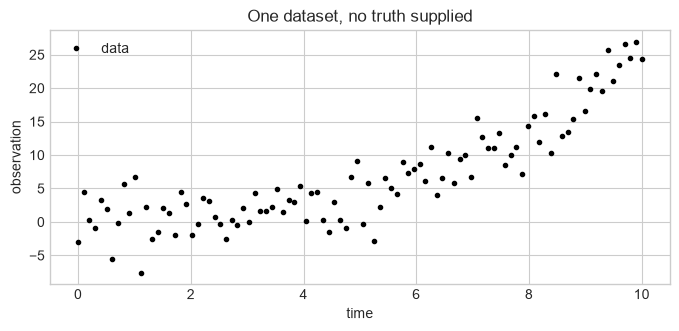
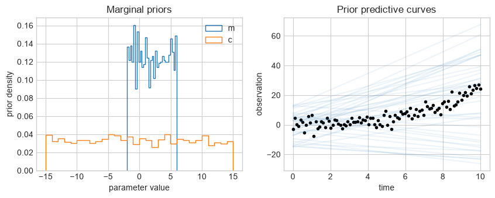
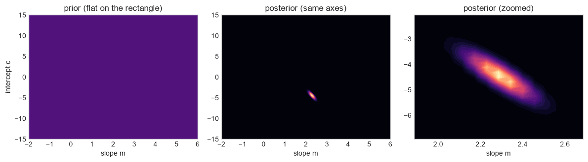
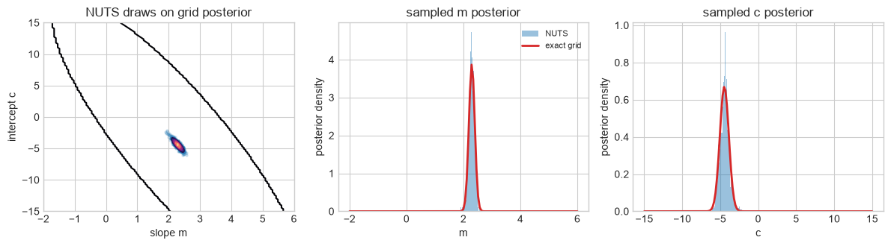
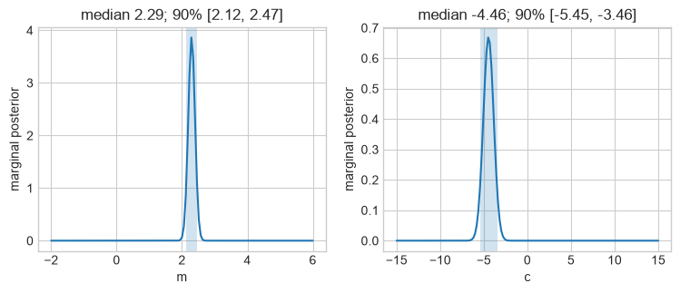
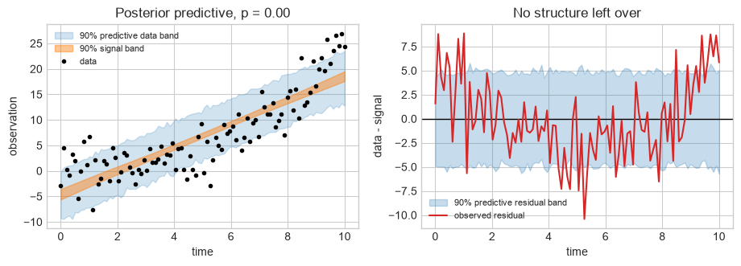
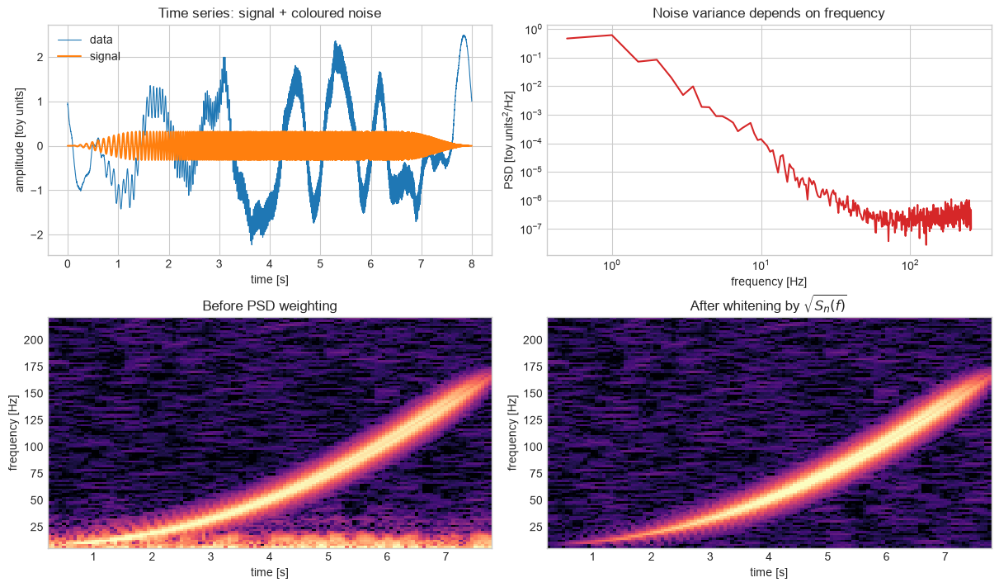

Part 1: Bayesian inference from first principles#
FQCP 2026 · Bayesian parameter estimation for gravitational-wave sources
Goal and route#
Build Bayesian parameter estimation from a signal and noise model, without hiding any step behind Bilby.
Live route
Follow Sections 1–4 in order: model, prior, likelihood, posterior checks. Section 5 is the exercise set you run yourself; Section 6 carries the same likelihood into the frequency domain. Stop at the end-of-live-route marker.
The four pieces of Bayes’ theorem#
Bayesian inference combines what the model allowed before these data with how well each allowed value explains them:
Piece |
Plain-language question |
|---|---|
parameter \(\theta\) |
what unknown quantity are we trying to learn? |
prior \(\pi(\theta)\) |
what values did the model allow before these data? |
likelihood \(\mathcal L(d\mid\theta)\) |
how well would each proposed value explain the observed data? |
posterior \(p(\theta\mid d)\) |
what values remain plausible after combining prior and likelihood? |
evidence \(\mathcal Z\) |
what normalises the posterior, and how well did the complete model predict the data? |
The same calculation in a less abstract setting:

Figure: Randall Munroe, “Seashell,” xkcd 1236, used under the CC BY-NC 2.5 licence.
Here is one numerical version of the story. The numbers are classroom choices, not values stated in the comic.
Bayes term |
Seashell question |
Illustrative value |
|---|---|---|
hypothesis |
am I near the ocean? |
— |
data |
I picked up a seashell |
— |
prior |
how often am I near the ocean before noticing the shell? |
\(P(O)=0.05\) |
likelihood |
if I am near the ocean, how often do I pick up a shell? |
\(P(S\mid O)=0.70\) |
alternative likelihood |
if I am not near the ocean, how often do I pick one up? |
\(P(S\mid \neg O)=0.001\) |
evidence |
how often do I pick up a shell anywhere? |
\(P(S)=0.70(0.05)+0.001(0.95)=0.03595\) |
posterior |
after picking one up, how plausible is “near the ocean”? |
\(P(O\mid S)=0.70(0.05)/0.03595\approx0.97\) |
The small prior matters, but the shell is about 700 times more likely near the ocean than away from it. That likelihood ratio is strong enough to move 5% prior probability to about 97% posterior probability.
For parameter estimation the reusable calculation is \(\text{posterior}\propto\text{likelihood}\times\text{prior}\). We compute every part on a two-parameter grid before introducing any sampler — a posterior is a distribution, not the location of the best-fitting line.
import importlib.util
import io
import os
import subprocess
import sys
from contextlib import redirect_stderr, redirect_stdout
from pathlib import Path
from tempfile import TemporaryDirectory
from urllib.request import urlretrieve
import numpy as np
import matplotlib.pyplot as plt
from IPython.display import HTML, display
from matplotlib.animation import FuncAnimation
IN_COLAB = "COLAB_RELEASE_TAG" in os.environ
missing = [name for name in ("numpyro", "morphZ") if importlib.util.find_spec(name) is None]
if missing:
if IN_COLAB:
subprocess.check_call(
[
sys.executable,
"-m",
"pip",
"install",
"-q",
"numpyro==0.21.0",
"morphz==0.4.1",
]
)
else:
raise ImportError(
"Install numpyro==0.21.0 and morphz==0.4.1, or run this notebook in Colab."
)
rng = np.random.default_rng(20260817)
plt.style.use("seaborn-v0_8-whitegrid")
def show_animation(animation):
# H.264 video: ~40x smaller in the notebook than one PNG per frame
try:
return display(HTML(animation.to_html5_video()))
except RuntimeError: # ffmpeg unavailable: fall back to per-frame PNGs
return display(HTML(animation.to_jshtml()))
print("Running in Colab:", IN_COLAB)
Running in Colab: False
1. A dataset, and a model we choose#
A dataset, loaded from a CSV. No injected curve, no true parameters, and the code that generated it is not in this notebook — deliberately. This is about what you can conclude when the truth is not supplied, which is every real analysis. You are given one thing: the noise level \(\sigma=3\), as an instrument would quote it.
We choose to fit a straight line with independent Gaussian noise,
That choice is the model. Every number below is conditional on it.
Predict before running: if the straight line is the wrong shape, which of the things we are about to compute — the posterior, the evidence, the Bayes factor against noise, the posterior predictive check — would notice? Write down your guess now; Section 4 settles it.
# 100 observations from an instrument. The code that produced them is not in
# this notebook, and you are not meant to go looking for it: everything you are
# allowed to know is on this screen.
local_candidates = [
Path("assets/basics_mystery_data.csv"),
Path("../assets/basics_mystery_data.csv"),
]
DATA_PATH = next(
(path for path in local_candidates if path.exists()), local_candidates[0]
)
DATA_URL = (
"https://raw.githubusercontent.com/nz-gravity/"
"FQCP2026_GW_data_analysis/main/assets/basics_mystery_data.csv"
)
if not DATA_PATH.exists():
DATA_PATH.parent.mkdir(parents=True, exist_ok=True)
urlretrieve(DATA_URL, DATA_PATH)
time, data = np.loadtxt(DATA_PATH, delimiter=",", skiprows=1, unpack=True)
sigma = 3.0 # quoted by the instrument team; treat it as known and exact
def signal_model(time, m, c):
"""The model *we* fit: a straight line."""
return m * time + c
print(f"{time.size} observations, t in [{time.min():.0f}, {time.max():.0f}]")
fig, ax = plt.subplots(figsize=(8, 3.3))
ax.plot(time, data, "o", ms=3, color="k", label="data")
ax.set(xlabel="time", ylabel="observation", title="One dataset, no truth supplied")
ax.legend()
plt.show()
100 observations, t in [0, 10]

2. Priors and prior predictive checks#
Take \(m\sim\mathrm{Uniform}(-2,6)\) and \(c\sim\mathrm{Uniform}(-15,15)\). A prior is part of the model, not an afterthought. Drawing curves from it checks whether the model can plausibly describe the data before inference.
Predict before running: Which is the more serious warning sign: a prior that is broad, or a prior predictive curve that cannot resemble the observed data? Explain why before looking at the draw.
n_prior = 2500
prior_m = rng.uniform(-2, 6, n_prior)
prior_c = rng.uniform(-15, 15, n_prior)
fig, axes = plt.subplots(1, 2, figsize=(10, 3.4))
axes[0].hist(prior_m, bins=30, density=True, histtype="step", label="m")
axes[0].hist(prior_c, bins=30, density=True, histtype="step", label="c")
axes[0].set(xlabel="parameter value", ylabel="prior density", title="Marginal priors")
axes[0].legend()
axes[1].plot(time, data, "o", ms=3, color="k")
for m, c in zip(prior_m[:40], prior_c[:40]):
axes[1].plot(time, signal_model(time, m, c), color="C0", alpha=0.08)
axes[1].set(xlabel="time", ylabel="observation", title="Prior predictive curves")
plt.show()

3. Gaussian likelihood#
Because
we can write the likelihood as
Changing the assumed noise scale changes the width of the posterior. If the noise model is wrong, a mathematically correct sampler still gives a misleading answer.
Tool 1: the posterior on a grid#
With only two parameters we can simply evaluate the likelihood everywhere and
look at it. fit_on_grid does that for any two-parameter model: it
returns the normalised posterior on the rectangle and the log evidence of that
model with a flat prior over it.
You will reuse it in Section 5 with other models, other amounts of data, and
other assumed noise levels, so read the signature now. One convention matters:
write your models with jnp (a drop-in replacement for np) and the same
model function will also work in the sampler below.
import jax
import jax.numpy as jnp
jax.config.update("jax_enable_x64", True) # evidences are differences of big numbers
def log_trapezoid_exp(log_values, grid, axis=-1):
"""Stable log of the trapezoidal integral of exp(log_values)."""
reference = np.max(log_values)
integral = np.trapezoid(np.exp(log_values - reference), grid, axis=axis)
return reference + np.log(integral)
def fit_on_grid(model, observed, first_grid, second_grid, time=time, sigma=sigma):
"""Posterior and log evidence for a 2-parameter model with a flat prior.
Returns the two parameter meshes, the normalised posterior density, and
log Z. `time` and `sigma` are keyword arguments so that you can refit with
less data or with a different assumed noise level.
"""
first, second = np.meshgrid(first_grid, second_grid, indexing="ij")
curves = jax.vmap(lambda a, b: model(jnp.asarray(time), a, b))(
first.ravel(), second.ravel()
)
residual = jnp.asarray(observed) - curves
log_l = np.asarray(
-0.5
* jnp.sum(
(residual / sigma) ** 2 + jnp.log(2 * jnp.pi * sigma**2),
axis=1,
)
).reshape(first.shape)
log_z = log_trapezoid_exp(
np.array([log_trapezoid_exp(row, second_grid) for row in log_l]), first_grid
) - np.log((first_grid[-1] - first_grid[0]) * (second_grid[-1] - second_grid[0]))
density = np.exp(log_l - log_l.max())
density /= np.trapezoid(np.trapezoid(density, second_grid, axis=1), first_grid)
return first, second, density, log_z
m_grid = np.linspace(-2, 6, 141)
c_grid = np.linspace(-15, 15, 161)
M, C, posterior, log_z_line = fit_on_grid(signal_model, data, m_grid, c_grid)
fig, axes = plt.subplots(1, 3, figsize=(12, 3.4))
axes[0].contourf(m_grid, c_grid, np.ones_like(posterior).T, levels=1, cmap="magma")
axes[0].set(title="prior (flat on the rectangle)", xlabel="slope m")
axes[1].contourf(m_grid, c_grid, posterior.T, levels=24, cmap="magma")
axes[1].set(title="posterior (same axes)", xlabel="slope m")
axes[1].sharex(axes[0])
axes[1].sharey(axes[0])
# The posterior occupies a tiny corner of the prior, so zoom in on it.
occupied = posterior > 1e-4 * posterior.max()
zoom_m = m_grid[occupied.any(axis=1)]
zoom_c = c_grid[occupied.any(axis=0)]
axes[2].contourf(m_grid, c_grid, posterior.T, levels=24, cmap="magma")
axes[2].set(
title="posterior (zoomed)",
xlabel="slope m",
xlim=(zoom_m[0], zoom_m[-1]),
ylim=(zoom_c[0], zoom_c[-1]),
)
axes[0].set_ylabel("intercept c")
plt.tight_layout()
plt.show()
print(
"the posterior occupies "
f"{100 * occupied.mean():.2f}% of the prior rectangle"
)

the posterior occupies 0.74% of the prior rectangle
Expected output — open this if your cell has not run yet

Tool 2: the posterior from a sampler#
The grid above defined and displayed the posterior. NumPyro now gives NUTS the same prior, signal model, likelihood, and data. The sampler changes how we explore the posterior; it does not change the posterior itself.
You do not need to understand NUTS today. Read the model from top to bottom: sample a slope, sample an intercept, predict the data, and compare that prediction with the observations using the same Gaussian noise model.
from jax import random as jax_random
import numpyro
import numpyro.distributions as dist
from numpyro.infer import MCMC, NUTS
from morphZ import evidence
def numpyro_line_model(time, observed=None):
m = numpyro.sample("m", dist.Uniform(-2.0, 6.0))
c = numpyro.sample("c", dist.Uniform(-15.0, 15.0))
mean = m * time + c
numpyro.sample("data", dist.Normal(mean, sigma), obs=observed)
nuts_run = MCMC(
NUTS(numpyro_line_model),
num_warmup=400,
num_samples=1000,
progress_bar=False,
)
nuts_run.run(jax_random.PRNGKey(2026), jnp.asarray(time), jnp.asarray(data))
nuts_draws = {name: np.asarray(values) for name, values in nuts_run.get_samples().items()}
fig, axes = plt.subplots(1, 3, figsize=(12, 3.4))
axes[0].contour(m_grid, c_grid, posterior.T, levels=7, cmap="magma")
axes[0].scatter(nuts_draws["m"], nuts_draws["c"], s=5, alpha=0.15)
axes[0].set(xlabel="slope m", ylabel="intercept c", title="NUTS draws on grid posterior")
for ax, name, grid, exact in zip(
axes[1:],
["m", "c"],
[m_grid, c_grid],
[np.trapezoid(posterior, c_grid, axis=1), np.trapezoid(posterior, m_grid, axis=0)],
):
ax.hist(nuts_draws[name], bins=35, density=True, alpha=0.45, label="NUTS")
ax.plot(grid, exact, color="C3", lw=2, label="exact grid")
ax.set(xlabel=name, ylabel="posterior density", title=f"sampled {name} posterior")
axes[1].legend(fontsize=8)
plt.tight_layout()
plt.show()
print("posterior draws:", len(nuts_draws["m"]))
/Users/avi/Documents/projects/WORKSHOP/FQCP2026_GW_data_analysis/.venv/lib/python3.12/site-packages/tqdm/auto.py:21: TqdmWarning: IProgress not found. Please update jupyter and ipywidgets. See https://ipywidgets.readthedocs.io/en/stable/user_install.html
from .autonotebook import tqdm as notebook_tqdm

posterior draws: 1000
The same model, wrapped so that Section 5 can reuse it. It takes any
two-parameter model(time, a, b) written with jnp — the same convention
fit_on_grid uses — and uniform prior bounds for the two parameters. The
draws come back under the generic names "a" and "b".
def run_nuts(model, bounds, observed=data, time=time, sigma=sigma, seed=2026):
"""NUTS draws for a 2-parameter model with uniform priors.
`bounds` is ((a_low, a_high), (b_low, b_high)). Returns {"a": ..., "b": ...}.
"""
(a_low, a_high), (b_low, b_high) = bounds
def wrapped(observed=None):
a = numpyro.sample("a", dist.Uniform(a_low, a_high))
b = numpyro.sample("b", dist.Uniform(b_low, b_high))
prediction = model(jnp.asarray(time), a, b)
numpyro.sample("data", dist.Normal(prediction, sigma), obs=observed)
run = MCMC(
NUTS(wrapped), num_warmup=500, num_samples=1500, progress_bar=False
)
run.run(jax_random.PRNGKey(seed), observed=jnp.asarray(observed))
return {name: np.asarray(values) for name, values in run.get_samples().items()}
check_draws = run_nuts(signal_model, ((-2.0, 6.0), (-15.0, 15.0)))
print(
f"slope from NUTS: {np.median(check_draws['a']):.3f} "
f"+/- {np.std(check_draws['a']):.3f}"
)
slope from NUTS: 2.296 +/- 0.110
Use either method for the posterior in Section 5. NUTS itself returns draws, not an evidence; below we will estimate the evidence from those draws with MorphZ.
Live demonstration, not a convergence claim
This short single-chain run is enough to connect code with a sampled posterior because the exact grid is available as a check. Real parameter estimation uses multiple chains or independent runs and checks divergences, effective sample size, convergence, and missed modes. The sampler extension lab develops those ideas.
Expected output — open this if your cell has not run yet

Two things to take from that figure. The posterior is a ridge: increasing the slope can be compensated by decreasing the intercept, so the two parameters are correlated and neither is well determined on its own. And the ridge occupies a vanishing fraction of the prior rectangle — that shrinkage is what the evidence will charge the model for later, and it is the whole content of the Occam factor.
Marginalisation integrates over the other parameter; it is not the same as holding it at a best-fit value.
p_m = np.trapezoid(posterior, c_grid, axis=1)
p_c = np.trapezoid(posterior, m_grid, axis=0)
def interval(grid, density):
cdf = np.r_[0, np.cumsum((density[:-1] + density[1:]) * np.diff(grid) / 2)]
cdf /= cdf[-1]
return np.interp([0.05, 0.5, 0.95], cdf, grid)
fig, axes = plt.subplots(1, 2, figsize=(9, 3.2))
for ax, grid, density, name in zip(axes, [m_grid, c_grid], [p_m, p_c], ["m", "c"]):
q = interval(grid, density)
ax.plot(grid, density)
ax.axvspan(q[0], q[2], alpha=0.2)
ax.set(
xlabel=name,
ylabel="marginal posterior",
title=f"median {q[1]:.2f}; 90% [{q[0]:.2f}, {q[2]:.2f}]",
)
plt.show()

Is there a signal at all? Evidence and the Bayes factor#
For a model \(M\) the evidence averages the likelihood over its normalised prior,
This is the gravitational-wave detection question in miniature:
\(M_1\), signal present: the line, with \(m\) and \(c\) free over the prior rectangle;
\(M_0\), noise only: \(h=0\), no free parameters, so \(\mathcal Z_0=\mathcal L(d\mid h=0)\) with nothing to integrate.
\(M_1\) does not win merely by fitting better — it pays for its two parameters, because prior volume that fits badly drags the average down. That is the Bayesian Occam factor, and why a Bayes factor is meaningless without its priors.

Figure: Randall Munroe, “Frequentists vs. Bayesians,” xkcd 1132, used under the CC BY-NC 2.5 licence.
The joke is about base-rate neglect. A rare false alarm is not, by itself, the probability that the claim is false. Posterior model odds combine the Bayes factor with the prior odds:
This is not a rule that frequentist analyses must ignore context. It is a memorable warning not to confuse a tail probability under \(M_0\) with a probability assigned to \(M_0\) after seeing the data.
Predict before running: the straight line is not the shape that made these data. Do you expect \(\log\mathcal B_{10}\) to come out near zero, mildly positive, or overwhelmingly positive?
log_z_noise = -0.5 * np.sum((data / sigma) ** 2 + np.log(2 * np.pi * sigma**2))
log_bayes_factor = log_z_line - log_z_noise
print(f"log Z (line, M1): {log_z_line:9.2f}")
print(f"log Z (noise, M0): {log_z_noise:9.2f}")
print(f"log Bayes factor, line over noise: {log_bayes_factor:.1f}")
log Z (line, M1): -303.26
log Z (noise, M0): -818.14
log Bayes factor, line over noise: 514.9
Estimate \(\log\mathcal Z\) from the NUTS draws#
MorphZ fits an approximation to the sampled posterior and uses it for bridge sampling. It is a post-processing evidence estimator: NUTS still did not compute \(\mathcal Z\) itself. Here the grid gives us an exact two-dimensional answer to check against.
nuts_samples = np.column_stack([nuts_draws["m"], nuts_draws["c"]])
def line_log_posterior(sample):
"""Normalised log prior plus log likelihood for MorphZ."""
m, c = sample
if not (-2.0 <= m <= 6.0 and -15.0 <= c <= 15.0):
return -np.inf
residual = data - signal_model(time, m, c)
log_likelihood = -0.5 * np.sum(
(residual / sigma) ** 2 + np.log(2 * np.pi * sigma**2)
)
log_prior = -np.log(8.0 * 30.0)
return float(log_likelihood + log_prior)
nuts_log_posterior = np.array([line_log_posterior(sample) for sample in nuts_samples])
np.random.seed(2026)
with TemporaryDirectory(prefix="fqcp_morphz_") as morphz_output:
with redirect_stdout(io.StringIO()), redirect_stderr(io.StringIO()):
morphz_runs = np.asarray(
evidence(
post_samples=nuts_samples,
log_posterior_values=nuts_log_posterior,
log_posterior_function=line_log_posterior,
n_resamples=1000,
thin=1,
kde_fraction=0.6,
bridge_start_fraction=0.5,
max_iter=2000,
tol=1e-4,
morph_type="2_group",
kde_bw="silverman",
param_names=["m", "c"],
output_path=morphz_output,
n_estimations=3,
verbose=False,
plot=False,
show_progress=False,
)
)
morphz_log_z = morphz_runs[:, 0]
morphz_error = morphz_runs[:, 1]
print(
f"MorphZ log Z: {morphz_log_z.mean():.2f} "
f"+/- {morphz_error.mean():.2f} (reported bridge error)"
)
print(f"exact grid log Z: {log_z_line:.2f}")
print(f"difference: {morphz_log_z.mean() - log_z_line:+.2f}")
MorphZ log Z: -303.28 +/- 0.01 (reported bridge error)
exact grid log Z: -303.26
difference: -0.02
Read that number carefully
A log Bayes factor of several hundred is about as decisive as this statistic gets. In a gravitational-wave search it would be reported as an unambiguous detection.
It says the data contain something other than noise. It does not say the something is a straight line. \(M_0\) is a very weak opponent: almost any smooth curve through these points beats “nothing at all” by a similar margin. A Bayes factor is a comparison, never a verdict on a single model, and the margin tells you how bad the alternative was as much as how good the winner is.
4. Posterior predictive check#
Draw parameter pairs from the posterior, map each through the signal model, and add a noise draw. That is the posterior predictive distribution: it predicts data, not the noise-free curve, so it is the only version the observed points can actually be compared against.
A summary statistic turns the picture into a number. Take \(\chi^2=\sum_i\left[(d_i-h_i(\theta))/\sigma\right]^2\): the posterior predictive p-value is the fraction of replicated datasets whose \(\chi^2\) is at least as large as the observed one. Values near 0 or 1 mean the model cannot produce data like ours. It is a falsification test, not a score to maximise.
def posterior_predictive(model, first, second, weights, observed, n_draw=500):
"""Replicate datasets from the posterior and score them against `observed`."""
flat = (weights / weights.sum()).ravel()
draw = rng.choice(flat.size, size=n_draw, replace=True, p=flat)
curves = np.array(
[model(time, a, b) for a, b in zip(first.ravel()[draw], second.ravel()[draw])]
)
replicas = curves + rng.normal(0, sigma, curves.shape) # predict data, not curves
chi2 = lambda residual: ((residual / sigma) ** 2).sum(axis=1)
p_value = (chi2(replicas - curves) >= chi2(observed - curves)).mean()
return curves, replicas, p_value
curves, replicas, p_value = posterior_predictive(signal_model, M, C, posterior, data)
fig, (ax, rx) = plt.subplots(1, 2, figsize=(11, 3.3))
ax.fill_between(
time,
*np.quantile(replicas, [0.05, 0.95], axis=0),
alpha=0.2,
color="C0",
label="90% predictive data band",
)
ax.fill_between(
time,
*np.quantile(curves, [0.05, 0.95], axis=0),
alpha=0.45,
color="C1",
label="90% signal band",
)
ax.plot(time, data, "o", ms=3, color="k", label="data")
ax.set(
xlabel="time",
ylabel="observation",
title=f"Posterior predictive, p = {p_value:.2f}",
)
ax.legend(fontsize=8)
rx.axhline(0, color="k", lw=1)
rx.fill_between(
time,
*np.quantile(replicas - curves, [0.05, 0.95], axis=0),
alpha=0.25,
color="C0",
label="90% predictive residual band",
)
rx.plot(time, np.median(data - curves, axis=0), color="C3", label="observed residual")
rx.set(xlabel="time", ylabel="data - signal", title="No structure left over")
rx.legend(fontsize=8)
plt.show()

Expected output — open this if your cell has not run yet

The check that fails#
Look at the residual panel before reading the number.
The left panel is unremarkable. The right panel is not scatter: it is a slow arc, because a straight line cannot bend the way these data bend, so every posterior draw is wrong in the same direction at the same times.
The \(p\)-value is \(0.000\). Not one dataset replicated from the line’s own posterior fits as badly as the real data, so the line is not merely imperfect — it is excluded, by the same data that just handed it a log Bayes factor of several hundred over noise.
No posterior could have told you this. A posterior reports the best parameters of whatever model it was handed; it has no way to say “none of these”. Only comparing predicted data with observed data can.
The reveal: the CSV came from an exponential rise,
with exactly the white \(\sigma=3\) noise we assumed. The noise model was right all along; the signal model was the wrong shape.
Two things generalise:
Loud is not right. A signal-versus-noise Bayes factor begins an argument, it does not end one. Hence residual tests and waveform-systematics studies alongside every published posterior.
A passing check is not proof. A non-extreme \(p\)-value means only that this statistic found nothing wrong — and these \(p\)-values are conservative, since the data were used both to fit and to test.
5. Your turn: four experiments#
Each experiment below changes exactly one thing: the amount of data, the
assumed noise, or the signal model. All of them build on fit_on_grid,
run_nuts, interval, and posterior_predictive, already defined above.
Grid or sampler, your choice for exercises 1 and 2 — comparing them is
worthwhile in itself. Exercises 3 and 4 need an evidence, so reach for
fit_on_grid. Write any new model with jnp, not np, so it works with
both tools:
def my_model(time, first, second):
return first * jnp.exp(time / second)
Work in pairs.
Exercise 1 — does more data help?#
Refit the line using only \(N\) of the 100 observations, for \(N\in\{10,25,50,100\}\), and overlay the four marginal posteriors on \(m\).
Thin the data evenly across the whole time range rather than taking the first \(N\) points, so that the only thing changing is how many observations you have.
How does the 90% width scale with \(N\)? Compare it with \(1/\sqrt N\).
Does it contract monotonically? Should it have to?
Now try
data[:n]instead and watch the scaling change. Why?
Hint
keep = np.linspace(0, 99, n).astype(int) picks the subset. Then either
fit_on_grid(signal_model, data[keep], m_grid, c_grid, time=time[keep])
run_nuts(signal_model, ((-2, 6), (-15, 15)), observed=data[keep], time=time[keep])
For the grid, marginalise with np.trapezoid(density, c_grid, axis=1) and
summarise with interval. For the sampler, np.quantile(draws["a"], [0.05, 0.95]).
Exercise 2 — what if the assumed noise is wrong?#
Keep all 100 points, but tell the likelihood the noise is \(\sigma/2\), then that it is \(2\sigma\). Overlay the three marginal posteriors on \(m\).
Which assumption gives the narrowest posterior?
Is the narrowest one the best answer? What did the calculation actually believe when you halved \(\sigma\)?
Nothing about the data changed. What does that say about reading confidence off a posterior width?
Hint
Both tools take sigma as a keyword argument:
fit_on_grid(signal_model, data, m_grid, c_grid, sigma=sigma / 2) or
run_nuts(signal_model, ((-2, 6), (-15, 15)), sigma=sigma / 2).
This is why the gravitational-wave chapters spend so long on PSD estimation: the PSD is the assumed noise, and getting it wrong does exactly this.
Exercise 3 — try a different signal model#
Section 4 showed the line failing its posterior predictive check. Fit an exponential instead,
over \(A\in[0,4]\) and \(\tau\in[1,10]\). Report \(\log\mathcal Z\) and the log Bayes
factor against the line, then run posterior_predictive on it and compare the
\(p\)-value with the line’s.
Which model does the evidence prefer, and by how much?
The two models were given different prior rectangles. How much of the log Bayes factor could that difference alone account for?
Hint
def exponential_model(time, amplitude, tau):
return amplitude * (jnp.exp(time / tau) - 1.0)
then call
fit_on_grid(exponential_model, data, np.linspace(0, 4, 141), np.linspace(1, 10, 161)).
The prior-volume term is np.log(volume_line / volume_exponential).
Exercise 4 — a model that is wrong in a different way#
Now fit a sinusoid, \(h(t)=A\sin(2\pi f t)\), over \(A\in[0,40]\) and \(f\in[0.01,1]\). Compute its \(\log\mathcal Z\) and compare it with both the line and the noise-only model.
The sinusoid also beats noise-only by hundreds of log units. Does that make it a detection?
Rank the three signal models by evidence, and by posterior predictive \(p\)-value. Do the two rankings agree?
You now have three models, exactly one of which generated the data. In a real analysis the true shape is never on the menu. What is the honest statement to make about the winner?
Hint
def sine_model(time, amplitude, frequency):
return amplitude * jnp.sin(2 * np.pi * frequency * time)
6. The gravitational-wave bridge: the same likelihood in frequency#
Nothing fundamentally new happens here. In Sections 1–4 we assumed
Every time sample had the same independent variance. That is white noise: its variance is spread uniformly over frequency, so its power spectral density (PSD) is flat.
Real detector noise is coloured. Nearby time samples are then correlated, but for a stationary Gaussian process the Fourier coefficients are approximately independent. The same Gaussian likelihood becomes
where \(S_n(f)\) is the one-sided PSD. In words:
each Fourier mode is Gaussian around signal + noise, and the PSD tells us the expected noise variance of that mode.
This is the precise version of the “noisy pixels” picture. Raw time samples or image pixels have a covariance matrix; the PSD is the variance map only after transforming a stationary process into Fourier modes.
From residuals to the Whittle likelihood#
For residual \(\widetilde r_k=\widetilde d_k-\widetilde h_k(\theta)\),
When the PSD is fixed, this is often written
Compare this with the first Gaussian likelihood: residual squared divided by variance. The only change is that each frequency receives its own variance. Quiet frequencies receive more weight; noisy frequencies receive less.
Predict before running: The raw trace below contains a chirp and strong low-frequency noise. After division by the noise ASD, which feature should become easier to see: the low-frequency wander or the chirp?
from scipy.signal import chirp, spectrogram, welch, windows
bridge_rate = 512
bridge_duration = 8.0
bridge_time = np.arange(0, bridge_duration, 1 / bridge_rate)
bridge_frequency = np.fft.rfftfreq(bridge_time.size, 1 / bridge_rate)
# A smooth toy PSD shape: loud at low frequency, quiet in the middle, then rising.
noise_psd_shape = (
1
+ (45 / np.maximum(bridge_frequency, 1)) ** 4
+ (bridge_frequency / 220) ** 2
)
noise_psd_shape[0] = noise_psd_shape[1]
white_noise = rng.normal(size=bridge_time.size)
coloured_noise = np.fft.irfft(
np.fft.rfft(white_noise) * np.sqrt(noise_psd_shape),
n=bridge_time.size,
)
coloured_noise /= np.std(coloured_noise)
bridge_signal = 0.32 * windows.tukey(bridge_time.size, alpha=0.35) * chirp(
bridge_time,
f0=8,
f1=180,
t1=bridge_duration,
method="quadratic",
)
bridge_data = coloured_noise + bridge_signal
whitened_data = np.fft.irfft(
np.fft.rfft(bridge_data) / np.sqrt(noise_psd_shape),
n=bridge_time.size,
)
whitened_signal = np.fft.irfft(
np.fft.rfft(bridge_signal) / np.sqrt(noise_psd_shape),
n=bridge_time.size,
)
psd_frequency, estimated_psd = welch(
coloured_noise,
fs=bridge_rate,
nperseg=1024,
average="median",
)
fig, axes = plt.subplots(2, 2, figsize=(12, 7), constrained_layout=True)
axes[0, 0].plot(bridge_time, bridge_data, lw=0.8, label="data")
axes[0, 0].plot(bridge_time, bridge_signal, lw=1.5, label="signal")
axes[0, 0].set(
xlabel="time [s]",
ylabel="amplitude [toy units]",
title="Time series: signal + coloured noise",
)
axes[0, 0].legend()
axes[0, 1].loglog(psd_frequency[1:], estimated_psd[1:], color="C3")
axes[0, 1].set(
xlabel="frequency [Hz]",
ylabel="PSD [toy units$^2$/Hz]",
title="Noise variance depends on frequency",
)
for ax, series, title in [
(axes[1, 0], bridge_data, "Before PSD weighting"),
(axes[1, 1], whitened_data, r"After whitening by $\sqrt{S_n(f)}$"),
]:
spec_f, spec_t, power = spectrogram(
series,
fs=bridge_rate,
nperseg=256,
noverlap=224,
)
band = (spec_f >= 5) & (spec_f <= 220)
decibels = 10 * np.log10(power[band] + 1e-20)
ax.pcolormesh(
spec_t,
spec_f[band],
decibels,
shading="auto",
cmap="magma",
vmin=np.percentile(decibels, 10),
vmax=np.percentile(decibels, 99.5),
)
ax.set(xlabel="time [s]", ylabel="frequency [Hz]", title=title)
plt.show()

Whitening is one line, and it is worth seeing how little there is to it.
whitened_frequency = np.fft.rfft(bridge_data) / np.sqrt(noise_psd_shape)
def wall_height(spectrum):
"""Low-frequency power relative to mid-band power."""
power = np.abs(spectrum) ** 2
return power[1:5].mean() / power[100:200].mean()
print(
f"low-frequency excess: {wall_height(np.fft.rfft(bridge_data)):.0f}x "
f"before, {wall_height(whitened_frequency):.3f}x after"
)
low-frequency excess: 909x before, 0.007x after
Whitening does not manufacture a signal. It changes coordinates so that every Fourier mode is measured in units of its expected noise:
The bright track is now easier to see because the low-frequency noise wall no longer dominates the scale. The LVK notebooks keep this logic but replace the toy chirp and toy PSD with physical waveforms, detector data, and an off-source PSD estimate.
Boundary
This diagonal Fourier-bin likelihood assumes approximate stationarity and well-behaved data. Gaps, glitches, strong lines, and time-varying noise create correlations that a single diagonal PSD does not describe.
End of the live route
You now have the complete inference chain used later in the course:
For a comparison of NUTS, Metropolis, nested sampling, and variational inference, continue to the independently runnable sampler extension lab.
Reference: the parameter-estimation checklist#
Every analysis in the next two notebooks, and every published gravitational-wave result, is built from exactly these pieces.
Step |
Question it answers |
Where it can go wrong |
|---|---|---|
signal model \(h(\theta)\) |
what could have produced the data? |
waveform systematics, missing physics |
noise model / PSD |
what does “a good fit” mean quantitatively? |
non-stationarity, lines, glitches, PSD uncertainty |
likelihood \(\mathcal L(d\mid\theta)\) |
how compatible are data and parameters? |
wrong noise assumptions, correlated bins |
prior \(\pi(\theta)\) |
what was allowed before these data? |
unintended informativeness, hard boundaries |
sampler |
how do we explore the posterior? |
poor tuning, unconverged chains, missed modes |
diagnostics |
can we trust this particular run? |
too few effective samples, no burn-in check |
evidence \(\mathcal Z\) |
which model does the data prefer? |
prior-volume dependence, under-converged runs |
predictive comparison (\(\Delta\)elpd) |
which model predicts new data better? |
selection bias over many models, unreliable \(\hat k\) |
calibration (P-P) |
is the whole pipeline correct? |
only detectable over many simulations |
Vocabulary quick reference
Marginalisation integrates a nuisance parameter out; profiling maximises over it. Section 3 showed these are different, and the LISA notebook measures exactly how different.
Burn-in is the discarded start of a chain; thinning keeps every \(k\)-th sample. Thinning reduces storage, not Monte Carlo error.
Optimal SNR assumes a perfect template; matched-filter SNR is what you actually recover from data. The LVK notebook computes both.
Credible interval (Bayesian, probability over parameters) is not a confidence interval (frequentist, coverage over repeated experiments).
Read or try next#
Thrane & Talbot, An introduction to Bayesian inference in gravitational-wave astronomy develops the same likelihood–prior–posterior structure for real GW analyses.
Bilby’s linear-regression example is a useful comparison after doing the grid calculation by hand: identify which objects in Bilby correspond to each row of the checklist above.
The short Hubble-law prior-sensitivity lab repeats the grid calculation outside GW astronomy and shows why priors matter more when the data are weak.
Gelman et al., Bayesian Workflow connects model building, computation, predictive checks, and model revision.
Betancourt, Towards a Principled Bayesian Workflow is a deeper case study of computational faithfulness and model adequacy.
The course reading map separates introductory statistics, detector noise, waveform modelling, and production parameter estimation.
Next: